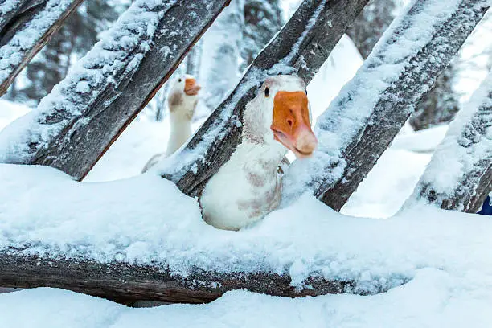

Pendant votre circuit au Canada vous verrez que le pays s'étend sur 6 des 24 fuseaux horaires du globe. Terre-Neuve et le Labrador ont 4h30 d'avance sur la Colombie-Britannique. Le Canada est à GMT-5 à Montréal et GMT-8 à Victoria, c'est à dire qu'en été, il y a 6 heures de décalage (quand il est 12h00 à Rennes, il est 6h00 à Montréal et il est 3h00 à Victoria). A titre indicatif, Terre-Neuve a 4h30 de décalage avec la France ; la côte atlantique, 5h00 ; les provinces de l’est, 6h00 ; du centre, 7h00 ; les Rocheuses, 8h00 et la côte pacifique, 9h00. On passe à l'heure d'été le premier dimanche d'avril, on avance alors les pendules d'une heure ; et on revient à l'heure d'hiver le dernier dimanche d'octobre. A noter : le Saskatchewan ne change pas d’heure en été. Dans les provinces anglophones, l’heure est indiquée par des chiffres allant de 1 à 12, complétés par les lettres AM (ante meridiem, « avant-midi ») ou PM (post meridiem, « après-midi »). Par exemple, 11 AM est pour 11h00 et 11 PM, pour 23h00.
-

1 De Québec au Nouveau-Brunswick- À la rencontre de l'Acadie
De parcs naturels en villages côtiers, faire la rencontre d'une province aussi culturelle que maritime. Ce parcours traverse plusieurs régions du Québec et du Nouveau-Brunswick reconnues pour leurs paysages naturels et leur patrimoine francophone. Les visiteurs peuvent y découvrir des villages acadiens, des plages, des phares et des sites historiques importants. Le voyage met en valeur les traditions acadiennes à travers la musique, la cuisine et les festivals locaux. Les touristes ont l’occasion de rencontrer des communautés chaleureuses et accueillantes fières de leur identité culturelle. Le circuit offre également des activités variées comme les randonnées, les excursions maritimes et la découverte de la gastronomie régionale. Plusieurs arrêts permettent d’explorer des lieux emblématiques liés à l’histoire des Acadiens. Ce voyage constitue une expérience éducative et culturelle enrichissante pour les visiteurs. Il favorise la découverte du patrimoine francophone de l’est du Canada. Ce site touristique attire chaque année de nombreux voyageurs intéressés par l’histoire, la nature et la culture acadienne.
16 jours, de 4500$ à 5500$
-

2 De Vancouver aux Rocheuses-L'Ouest canadien en train d'exception
Gagner les Rocheuses à bord d'un train panoramique; filer en liberté sur la route des glaciers.
10 jours, de 7500$ à 10000$
-

3 Toronto, Niagara, lac Ontario-Road-trip sauvage et refuges au bord de l'eau
Sillonner l'Ontario, après Toronto et les chutes du Niagara, la nature pour seul horizon.
10 jours, de 4500$ à 6500$
-

4 Du Pacifique aux Rockies-Family trip à travers l'Ouest canadien
Côte sauvage, lacs émeraude, montagnes vertigineuses et glaciers enneigés: un grand road-trip familial, de la Colombie-Britannique à l'Alberta.
17 jours, de 5600$ à 8500$
-

5 Yukon et Alaska- Summertime sur la dernière frontière
Sillonner le Grand Nord américano-canadien, à travers des paysages purs à couper ls souffle.
05 jours, de 3000$ à 4500$
-
 6
6Passionnés de vie sauvage, il existe de nombreuses façons de voyager pour aller au contact de la faune et l'observer dans son milieu naturel. Bien sûr, le plus mythique reste le voyage d'observation des animaux au Canada lors de grands safaris dans les parcs nationaux.
01 jour, de 30$ à 100$